AWS Essentials : Private Subnets
The objective of this post is to get a good understanding on subnetting in VPC and how to create a private subnet in VPC. Let’s get started.
Let us start with a clean slate. When ever you create an EC2 Instance in a particular region, AWS creates following services in the background for us.
- A default VPC.
- Public Subnets. (1 public subnet per AZ in that region)
- A default route table. (Main route table)
- An Internet Gateway, with updated entries in the Route table.
By default, the EC2 Instance we create will be in one of this particular public subnet.
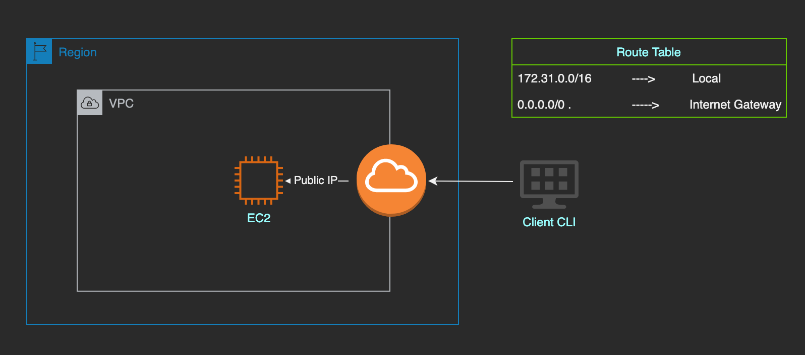Given below shows my default VPC.
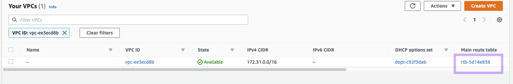Given below shows my main/default route table associated with the VPC and you can see the routes associated with the main route table as mentioned above.
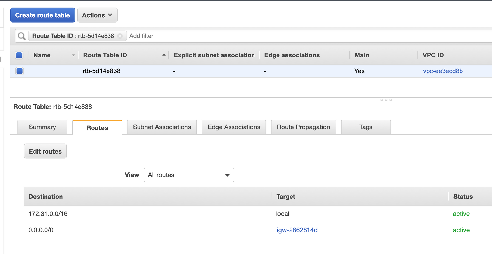My region is N. California and by default it comes with two AZ’s and hence 2 public subnets as shown below.
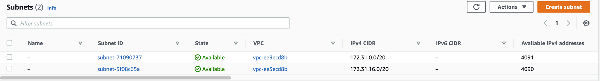As shown above our VPC has a CIDR block (172.31.0.0/16). That means first 16 bits represents the network address and next 16 bits can be host part and hence there can be upto 2^16 hosts connected to it.
But since we divide those network into multiple subnets and we took 4 bytes to represent the subnet , that means we can have up to (2^4= 16 subnets) and each subnet can have (2^12 = 4096) hosts connected to it. (Amazon don’t allows subnets with all 0’s and 1’s. So actual hosts we can connect is 2^12 - 5)
In our region we have two AZ’s and hence it shows two subnet, but we can have more subnets if needed. If you use an IP calculator, you can see various possible subnets you can create in this network.
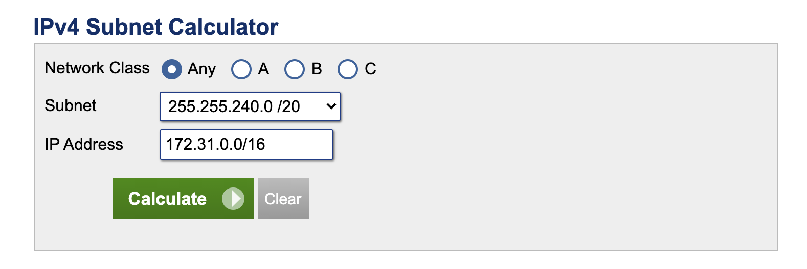 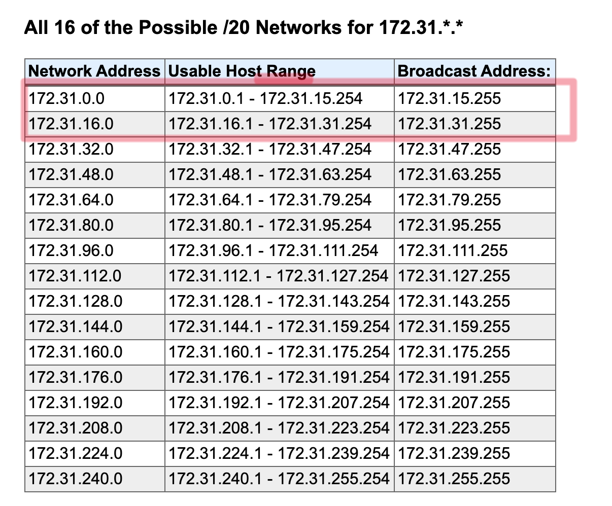As you can see the first two are already assigned to our existing subnets and we can use the next 12 available subnets.
Now if you check we have only 1 route table associated with our VPC and they are configured as following. This default route table created is called as Main route table and all subnets are by default associated with this main route table. But if you check the routes of main route table, you can see an Internet Gateway is attached to that route. (That means if we want to create a private subnet we need to create a new route table).
Create a Route table
Let us create a new route table in this VPC.
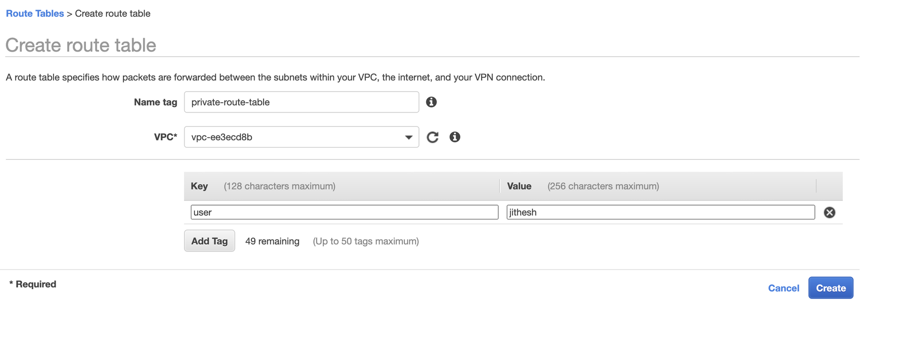By default this new route table doesn’t have any other routes other than the local.
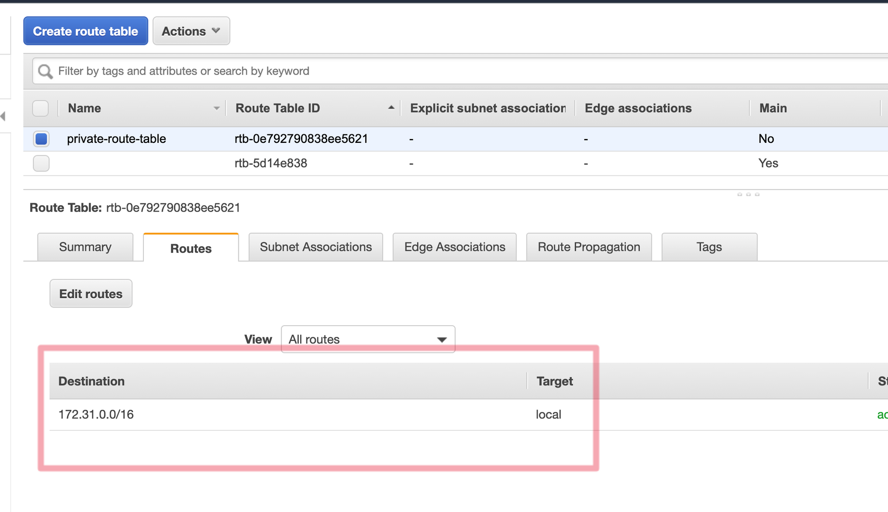
Create two subnets
We want our new instance to be in Private subnets. Make sure to chose next avaiable CIDR blocks from subnet generator.
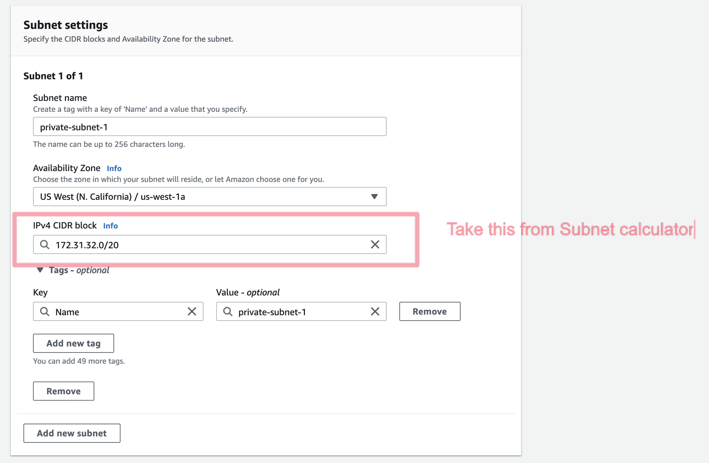 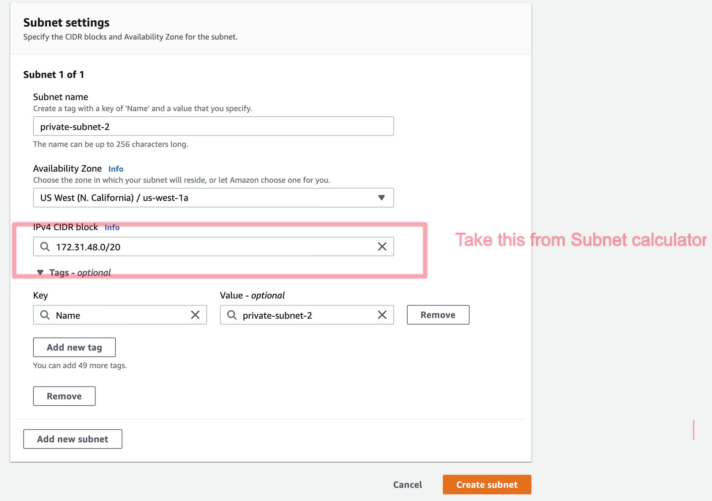Now we have 4 subnets, but all are pointing to the main route table and hence public.
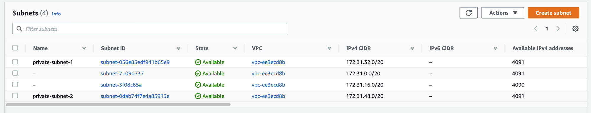 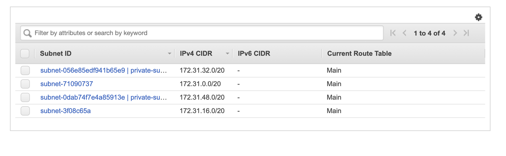To make the new subnet private, we need to associate them with the new route table we created. In order to do that open your route table and in subnet association, associate those two subnets.
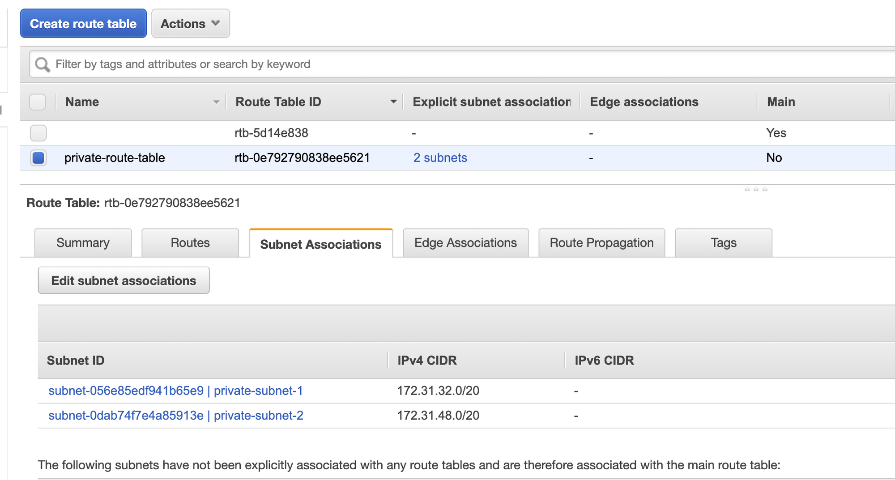Now let us create an EC2 instance in this private subnet and it should not be having any Public IP.
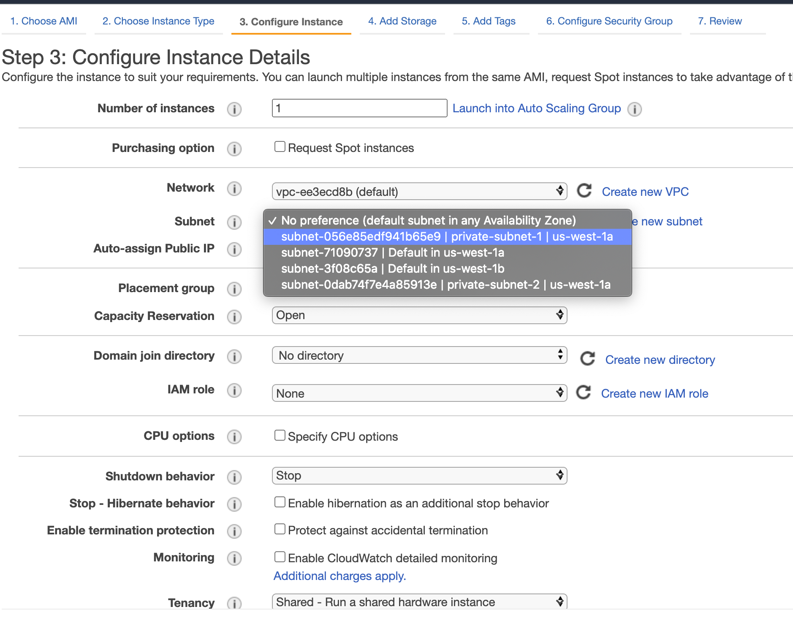As expected, no public IP for this new Instance.
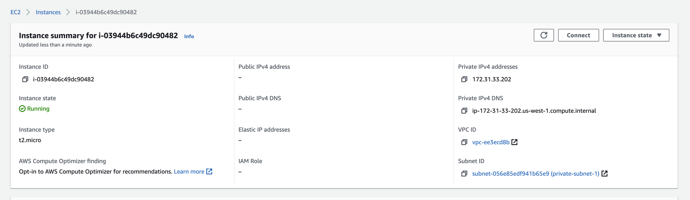Now the question is how you can connect to this new Private instance ? For this we will have to create a Bastion Host. We will discuss more on this in the next blog post.
Happy coding !